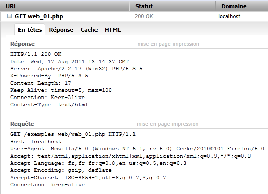
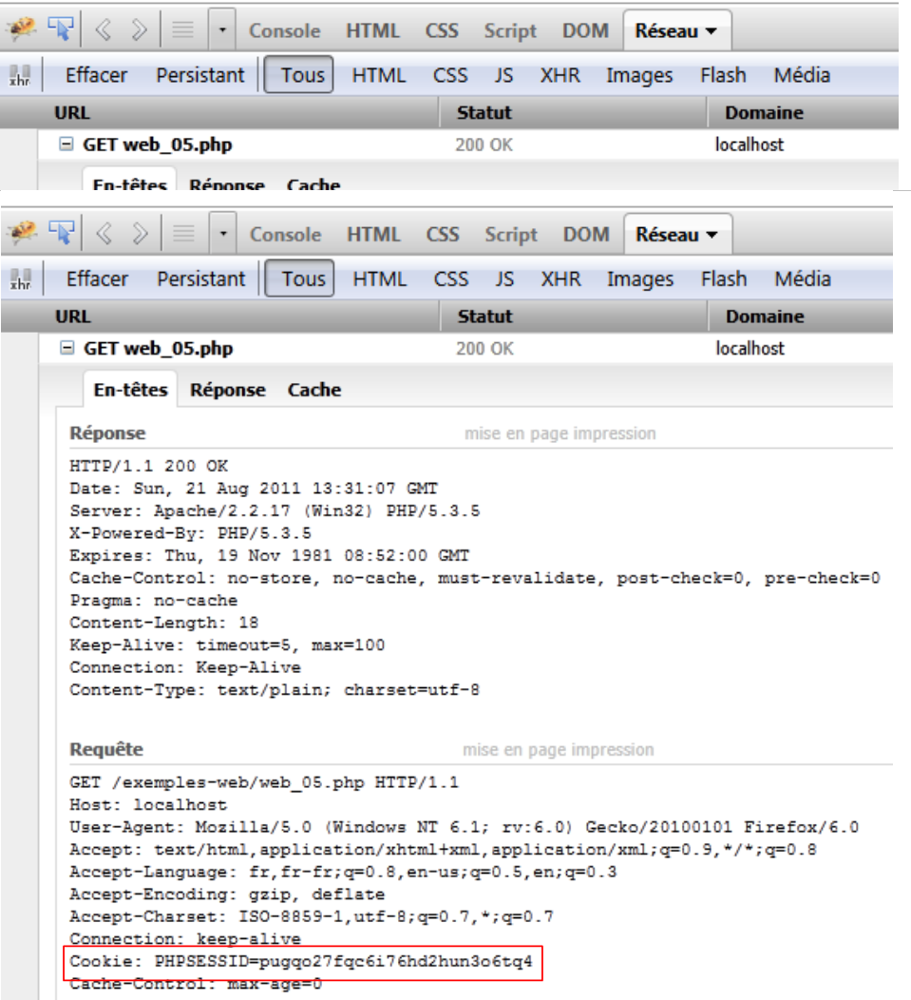

10. Server in PHP
Poiché i programmi PHP possono essere eseguiti da un server WEB, un programma di questo tipo diventa un programma server in grado di servire più client. Dal punto di vista del client, chiamare un servizio WEB equivale a richiedere l’URL di tale servizio. Il client può essere scritto in qualsiasi linguaggio, in particolare in PHP. In quest’ultimo caso, si utilizzano quindi le funzioni di rete che abbiamo appena visto. Dobbiamo inoltre sapere come “comunicare” con un servizio WEB, ovvero comprendere il protocollo http di comunicazione tra un server Web e i suoi client. Questo è l’obiettivo dei programmi che seguono.
Il client web descritto nel paragrafo 9.2 ci ha permesso di scoprire una parte del protocollo HTTP.

Nella loro versione più semplice, gli scambi client/server sono i seguenti:
- il client apre una connessione con la porta 80 del server web
- effettua una richiesta relativa a un documento
- il server web invia il documento richiesto e chiude la connessione
- il client chiude a sua volta la connessione
Il documento può essere di varia natura: un testo in formato HTML, un'immagine, un video, ... Può trattarsi di un documento esistente (documento statico) oppure di un documento generato al volo da uno script (documento dinamico). In quest'ultimo caso, si parla di programmazione web. Lo script per la generazione dinamica dei documenti può essere scritto in diversi linguaggi: PHP, Python, Perl, Java, Ruby, C#, VB.net, ...
In questo caso utilizziamo PHP per generare dinamicamente documenti di testo.
 |
- in [1], il client apre una connessione con il server, richiede uno script PHP, invia o meno dei parametri a tale script
- In [2], il server web fa eseguire lo script PHP tramite l'interprete PHP. Questo script genera un documento che viene inviato al client [3]
- il server chiude la connessione. Anche il client fa lo stesso.
Il server web può gestire più client contemporaneamente. Con il pacchetto software WampServer, il server web è un server Apache, un server open source della Apache Foundation (http://www.apache.org/). Nelle applicazioni che seguono, è necessario avviare WampServer. Ciò attiva tre componenti software: il server web Apache, SGBD e MySQL, nonché l’interprete PHP.
Gli script eseguiti dal server web saranno scritti con lo strumento NetBeans. Finora abbiamo scritto script PHP eseguiti in un contesto da console:
 |
L'utente utilizza la console per richiedere l'esecuzione di uno script PHP e riceverne i risultati.
Nelle applicazioni client/server che seguiranno,
- lo script del client viene eseguito in un contesto da console
- lo script del server viene eseguito in un contesto web
 |
Lo script PHP del server non può trovarsi in una posizione qualsiasi del file system. Infatti, il server web cerca i documenti statici e dinamici richiesti in posizioni specificate dalla configurazione. La configurazione predefinita di WampServer prevede che i documenti vengano cercati nella cartella <WampServer>/www, dove <WampServer> è la cartella di installazione di WampServer. Pertanto, se un client web richiede un documento D con il percorso URL [http://localhost/D], il server web fornirà il documento D con il percorso [<WampServer>/www/D].
Negli esempi che seguono, inseriremo gli script del server nella cartella [www/exemples-web]. Se uno script del server si chiama S.php, verrà richiesto al server web tramite URL e [http://localhost/exemples-web/S.php]. Verrà quindi restituito il documento [<WampServer>/www/exemples-web/S.php].
 |
Per creare uno script server c e con NetBeans, procederemo nel modo seguente:
 |
- in [1], creiamo un nuovo progetto
- in [2], selezioniamo la categoria [PHP] e il progetto [PHP Application]
 |
- in [3], assegniamo un nome al progetto
- in [4], scegliamo una cartella per il progetto
- in [5], specifichiamo che lo script deve essere eseguito da un server web locale (l'URL dello script sarà del tipo http://localhost/...). Il server web locale sarà il server web Apache di WampServer.
- In [6], specifichiamo l’URL del progetto. Qui decidiamo che uno script S.php del progetto verrà richiesto insieme a URL e [http://localhost/exemples-web/S.php]. In base a quanto detto, ciò significa che il percorso dello script S.php nel file system sarà [<WampServer>/www/exemples-web/S.php]. Questo è quanto indicato in [7]. Chiediamo qui che ogni script S.php del progetto venga copiato nella struttura di directory del server web Apache.
- in [8], il nuovo progetto.
Scriviamo uno script di prova:
 |
- in [1], creiamo nel progetto [exemples-web] un primo script PHP
- in [2], gli diamo un nome
- in [3], dopo averlo creato, gli attribuiamo il seguente contenuto
Per proseguire, è necessario che WampServer sia in esecuzione.
 |
- in [4], eseguiamo lo script web [exemple1.php]. NetBeans avvierà quindi il browser predefinito del computer e gli chiederà di visualizzare URL, [http://localhost/exemples-web/exemple1.php] e [5]
- in [6]; il browser visualizza ciò che lo script del server ha inviato al client.
In seguito, incontreremo due tipi di client web:
- un browser come quello sopra descritto. Abbiamo scritto che il server web invia una risposta del tipo: intestazioni HTTP, riga vuota, testo. Il browser visualizza solo texte.
- uno script PHP che gli mostrerà l’intera risposta: intestazioni HTTP, riga vuota, testo.
Di seguito,
- gli script server saranno scritti come [exemple1.php] sopra riportato
- gli script client saranno scritti come gli script da console che abbiamo scritto finora.
10.1. Applicazione client/server per data e ora
10.1.1. Il server (web_01)
<?php
// ora: numero di millisecondi dal 01/01/1970
// formato di visualizzazione data-ora
// d: giorno a 2 cifre
// m: mese a 2 cifre
// y: anno a 2 cifre
// H: ora 0,23
// i: minuti
// s: secondi
print date("d/m/y H:i:s",time());
In sostanza, lo script PHP riportato sopra visualizza l'ora corrente sullo schermo. Tuttavia, quando viene eseguito da un server web, il flusso n. 1, solitamente associato allo schermo, viene reindirizzato alla connessione che collega il server al proprio client. Pertanto, in un contesto web, lo script sopra riportato invia l'ora corrente sotto forma di testo al client.
Eseguiamo questo script all’interno di NetBeans:
 |
- in [1], si esegue lo script. Viene quindi avviato un browser web.
- in [2], l’URL richiesto dal browser web
- in [3], il testo inviato dallo script del server
Il browser client utilizza il protocollo HTTP per comunicare con il server web. Abbiamo già descritto la struttura di questo protocollo.
Il client invia righe di testo che possono essere suddivise in tre parti: intestazioni HTTP, riga vuota, documento. Il documento inviato al server web è solitamente vuoto oppure consiste in un insieme di parametri parami=vali, dove vali è un valore inserito dall’utente in un modulo HTML.
La risposta del server ha la stessa struttura: intestazioni HTTP, riga vuota, documento, dove document è questa volta il documento richiesto dal browser client. Se il client ha trasmesso dei parametri, il documento restituito dipende in genere da tali parametri.
Con il browser Firefox è possibile scoprire gli scambi effettivi tra client e server web. Esiste un plugin per Firefox, chiamato Firebug, che permette di tracciare questi scambi. Firebug è disponibile all'indirizzo URL [https://addons.mozilla.org/fr/firefox/addon/firebug/]. Se si utilizza il browser Firefox per visitare questo URL, è possibile scaricare il plugin Firebug. Di seguito si presume che il plugin Firebug sia stato scaricato e installato. È disponibile tramite un’opzione del menu di Firefox:
 |
Si apre una finestra di Firebug all’interno della finestra del browser Firefox. Questa finestra presenta a sua volta un menu:
 |
Per esaminare gli scambi client/server durante una richiesta HTTP, inviamo la richiesta URL [http://localhost/exemples-web/web_01.php] con il browser Firefox. La finestra di Firebug si riempie quindi di informazioni:
 |
Di seguito è riportato un riepilogo degli scambi client/server:
- [1]: il client ha inviato il comando HTTP: GET /esempi-web/web_01.php HTTP/1.1 per richiedere il documento [web01.php]
- [2]: il server ha inviato la risposta: HTTP/1.1 200 OK indicando di aver trovato il documento richiesto.
Firebug consente di visualizzare l’intero scambio di dati. È sufficiente “espandere” il URL:
 |
Qui sopra vediamo le intestazioni HTTP scambiate tra il client (Richiesta) e il server (Risposta). È possibile ottenere il codice sorgente degli scambi, c.a.d, e le righe di testo effettivamente scambiate, [1]. Otteniamo quindi il seguente codice sorgente:
 |
Per scrivere uno script client del server web, basta riprodurre il comportamento del browser. Dopo aver stabilito una connessione con il server, lo script client potrebbe inviare le 8 righe della richiesta sopra riportata. In realtà non tutto è indispensabile e invieremo solo le tre righe seguenti:
- riga 1: specifica il documento richiesto e il protocollo HTTP utilizzato
- riga 2: indica il nome del computer su cui è in esecuzione lo script client
- riga 3: indica che, al termine dello scambio, il client chiuderà la connessione al server
Passiamo ora alla risposta del server. Sappiamo che è stata generata dallo script PHP [web_01.php]. Qui sopra vediamo le intestazioni HTTP della risposta. Il codice dello script [web01.php] mostra che non è stato lui a generarle. Ricordiamo la configurazione dello script del server:
 |
È il server web che ha generato le intestazioni HTTP della risposta. Lo script del server può generarle autonomamente. Ne vedremo un esempio più avanti.
Abbiamo detto che la risposta del server web era della forma: intestazioni HTTP, riga vuota, documento. Se il documento è un documento di testo, è possibile visualizzarlo nella scheda [Réponse] di Firebug:
 |
Questa risposta è stata generata dallo script [web_01.php].
10.1.2. Un client (client1_web_01)
Ora scriviamo uno script client per il servizio precedente. Sappiamo che il client deve:
- aprire una connessione con il server web
- inviare il testo: intestazioni HTTP, riga vuota
- leggere la risposta completa del server fino a quando quest’ultimo non chiude la connessione con il client
- chiudere la connessione con il server
Lo script client viene eseguito in un ambiente console di NetBeans:
 |
- in [1], lo script client [client1_web_01.php] è incluso nel progetto NetBeans [exemples]
- in [2], le proprietà del progetto NetBeans [exemples]
- in [3], il progetto NetBeans [exemples] viene eseguito in modalità "riga di comando", che abbiamo anche denominato modalità "console".
Il codice dello script client è il seguente:
<?php
// dati
$HOTE = "localhost";
$PORT = 80;
$urlServeur = "/exemples-web/web_01.php";
// apertura di una connessione sulla porta 80 di $HOTE
$connexion = fsockopen($HOTE, $PORT);
// errore?
if (!$connexion) {
print "Erreur : $erreur\n";
exit;
}
// le intestazioni (header) del protocollo HTTP devono terminare con una riga vuota
// GET
fputs($connexion, "GET $urlServeur HTTP/1.1\n");
// Host
fputs($connexion, "Host: localhost\n");
// Connessione
fputs($connexion,"Connection: close\n");
// riga vuota
fputs($connexion,"\n");
// il server risponderà ora sul canale $connexion. Invierà tutti
// i propri dati e poi chiuderà il canale. Il client legge quindi tutto ciò che arriva da $connexion
// fino alla chiusura del canale
while ($ligne = fgets($connexion, 1000)) {
print "$ligne";
}//mentre
// il client chiude a sua volta la connessione
fclose($connexion);
// fine
exit;
Commenti
- riga 8: apertura di una connessione al server
- riga 16: comando HTTP GET
- riga 18: comando HTTP Host
- riga 20: comando HTTP Connessione
- riga 22: riga vuota
- righe 26-28: lettura di tutte le righe di testo inviate dal server fino alla chiusura della connessione da parte di quest'ultimo.
- riga 30: il client chiude a sua volta la connessione
Risultati
L'esecuzione dello script client produce i seguenti risultati:
Commenti
- righe 1-7: la risposta HTTP del server web.
- riga 8: la riga vuota che segnala la fine delle intestazioni HTTP
- righe 9 e successive: il documento. In questo caso, si tratta di un semplice testo che riporta la data e l'ora correnti. È il testo scritto dallo script PHP sull'uscita n. 1.
- riga 1: il server risponde di aver trovato il documento richiesto.
- riga 2: data e ora correnti del server
- riga 3: identità del server web
- riga 4: indica che il documento che seguirà è un documento generato dallo script PHP
- riga 5: numero di caratteri del documento
- riga 6: il server indica che, dopo aver inviato il documento, chiuderà la connessione
- riga 7: indica che il documento inviato dal server è un testo in formato HTML. In questo caso l'informazione non è corretta. Il documento è un testo senza un formato specifico. Quando il documento non è un testo in formato HTML, spetta allo script PHP indicarlo. In questo caso non lo abbiamo fatto.
10.1.3. Un secondo client (client2_web_01)
Il client precedente visualizzava tutto ciò che gli veniva inviato dal server web. In pratica, solitamente si ignorano le intestazioni HTTP della risposta e si utilizza solo la parte relativa al documento. In questo caso cerchiamo di recuperare la data e l’ora inviate dallo script PHP del server. Recupereremo queste informazioni utilizzando un'espressione regolare.
<?php
// recuperare le informazioni inviate da un server web
// dati
$HOTE = "localhost";
$PORT = 80;
$urlServeur = "/exemples-web/web_01.php";
// apertura di una connessione sulla porta 80 di $HOTE
$connexion = fsockopen($HOTE, $PORT);
// errore?
if (!$connexion) {
print "Erreur : $erreur\n";
exit;
}
// le intestazioni (header) del protocollo HTTP devono terminare con una riga vuota
// GET
fputs($connexion, "GET $urlServeur HTTP/1.1\n");
// Host
fputs($connexion, "Host: localhost\n");
// Connessione
fputs($connexion,"Connection: close\n");
// riga vuota
fputs($connexion,"\n");
// il server risponderà ora sul canale $connexion. Invierà tutti
// questi dati e poi chiuderà il canale. Il client legge quindi tutto ciò che arriva da $connexion
// fino a trovare la riga che sta cercando, nella forma jj/mm/aa hh:mm:ss
while ($ligne = fgets($connexion, 1000)) {
print "$ligne";
if (preg_match("/(\d\d)\/(\d\d)\/(\d\d) (\d\d):(\d\d):(\d\d)/", $ligne, $champs)) {
// si recuperano i # campi
array_shift($champs); // rimuove il primo elemento dell’array dei campi
// si recuperano i 6 campi in 6 variabili
list($j, $m, $a, $h, $i, $s) = $champs;
// visualizzazione del risultato
print "\ndateheure=[$j,$m,$a,$h,$i,$s]\n";
}//if
}//while
// a sua volta, il client chiude la connessione
fclose($connexion);
// fine
exit;
Risultati
10.2. Recupero da parte del server dei parametri inviati dal client
Nel protocollo HTTP, un client dispone di due metodi per trasmettere i parametri al server Web:
- richiede il servizio URL nella forma
GET url?param1=val1¶m2=val2¶m3=val3… HTTP/1.0
dove i valori vali devono essere preventivamente sottoposti a codifica affinché alcuni caratteri riservati vengano sostituiti dal loro valore esadecimale.
- richiede il codice URL del servizio nella forma
POST url HTTP/1.0
quindi, tra le intestazioni HTTP inviate al server, inserisce la seguente intestazione:
Le restanti intestazioni inviate dal client terminano con una riga vuota. A questo punto può inviare i propri dati nella forma
dove i valori vali devono, come per il metodo GET, essere preventivamente codificati. Il numero di caratteri inviati al server deve essere N, dove N è il valore dichiarato nell’intestazione
Lo script PHP, che recupera i precedenti parametri parami inviati dal client, ne ricava i valori dall’array:
- $_GET["parami"] per un comando GET
- $_POST["parami"] per un comando POST
10.2.1. Il cliente GET (client1_web_02)
Lo script PHP riportato di seguito invia tre parametri [nom, prenom, age] al server.
<?php
// cliente: invia nome, cognome ed età al server tramite il metodo GET
// dati
$HOTE = "localhost";
$PORT = 80;
$URL = "/exemples-web/web_02.php";
list($prenom, $nom, $age) = array("jean-paul", "de la hûche", 45);
// connessione al server web
$connexion = fsockopen($HOTE, $PORT);
// ritorno in caso di errore
if (!$connexion) {
print "Echec de la connexion au site ($HOTE,$PORT) : $erreur";
exit;
}//if
// invio delle informazioni al server PHP
// codifica delle informazioni
$infos = "prenom=" . urlencode(utf8_decode($prenom)) . "&nom=" . urlencode(utf8_decode($nom)) . "&age=" . urlencode("$age");
// monitoraggio console
print "infos envoyées au serveur (GET)=$infos\n";
print "URL demandée=[$URL?$infos]\n\n";
// le intestazioni (header) del protocollo HTTP devono terminare con una riga vuota
// GET
fputs($connexion, "GET $URL?$infos HTTP/1.1\n");
// Host
fputs($connexion, "Host: localhost\n");
// Connessione
fputs($connexion,"Connection: close\n");
// riga vuota
fputs($connexion,"\n");
// il server risponderà ora sul canale $connexion. Invierà tutti
// i propri dati e poi chiudere il canale. Il client legge tutto ciò che arriva da $connexion fino alla chiusura del canale
while ($ligne = fgets($connexion, 1000))
print "$ligne";
// il client chiude a sua volta la connessione
fclose($connexion);
Commenti
- riga 7: URL dello script del server
- riga 8: i valori dei 3 parametri
- riga 10: apertura di una connessione con il server web
- riga 18: codifica dei 3 parametri. Ci troviamo in uno script scritto in NetBeans con una codifica dei caratteri in UTF-8. Pertanto, i 3 valori dei parametri della riga 8 sono codificati in UTF-8. La funzione utf8_decode converte la loro codifica in ISO-8859-1. Una volta fatto ciò, possono essere codificati in URL. Tutti i caratteri non alfabetici vengono sostituiti con %xx, dove xx è il valore esadecimale del carattere. Gli spazi vengono invece sostituiti dal segno +.
- riga 24: il formato URL richiesto è $URL?$infos, dove $infos ha la forma nom=val1&prenom=val2&age=val3.
10.2.2. Il server (web_02)
Il server si limita a visualizzare ciò che riceve.
<?php
// gestione degli errori
ini_set("display_errors", "off");
// recupero da parte del server delle informazioni inviate dal client
// qui nome=P&cognome=N&età=A
// queste informazioni sono automaticamente disponibili nelle variabili
// $_GET['prenom'], $_GET['nom'], $_GET['age']
// vengono restituite al client
// intestazione UTF-8
header("Content-Type: text/plain; charset=utf-8");
// parametri inviati al server
$prenom = isset($_GET['prenom']) ? $_GET['prenom'] : "";
$nom = isset($_GET['nom']) ? $_GET['nom'] : "";
$age = isset($_GET['age']) ? $_GET['age'] : "";
// risposta al cliente
$réponse = "informations reçues du client [" .
utf8_encode(htmlspecialchars($prenom, ENT_QUOTES)) .
"," . utf8_encode(htmlspecialchars($nom, ENT_QUOTES)) .
"," . utf8_encode(htmlspecialchars($age, ENT_QUOTES)) . "]\n";
print $réponse;
Commenti
- riga 13: imposta l’intestazione HTTP «Content-Type». Per impostazione predefinita, il server web invia l’intestazione
che indica che la risposta è costituita da testo in formato HTML. In questo caso, la risposta sarà costituita da testo senza formattazione con caratteri codificati in UTF-8:
Le intestazioni HTTP devono essere inviate prima della risposta del server. Pertanto, come indicato sopra, la chiamata alla funzione header dovrà precedere qualsiasi istruzione print.
- righe 16-18: si recuperano i 3 parametri dall'array $_GET.
- riga 21: si costruisce la stringa di caratteri che verrà inviata come risposta al client. Alcuni caratteri hanno significati speciali in HTML e devono essere sostituiti con entità HTML per poter essere visualizzati. htmlspecialchars($string) sostituisce tutti questi caratteri con il loro equivalente nella stringa $string. Ad esempio, il carattere $ diventa &. Quindi, poiché alla riga 13 abbiamo specificato che la risposta sarebbe stata il testo UTF-8, codifichiamo in UTF-8 i valori recuperati.
- riga 25: la risposta viene inviata al client
Test 1
Eseguiamo lo script [web_02] da NetBeans. Viene quindi avviato un browser per visualizzare URL [http://localhost/exemples-web/web_02.php]:
 |
- in [1], il browser visualizza URL [http://localhost/exemples-web/web_02.php]. Poiché non abbiamo aggiunto alcun parametro a questo URL, il server ha risposto con parametri vuoti. Ricordiamo che la risposta del server è quella generata dall’istruzione print.
- In [2], aggiungiamo dei parametri a URL. Questa volta lo script del server li restituisce correttamente.
Si noti che NetBeans non è necessario per l’esecuzione di uno script del server. È sufficiente digitare URL dello script del server in un browser affinché lo script venga eseguito.
Test 2
Eseguiamo in NetBeans il client [client1_web_02.php]. Riceviamo la seguente risposta:
- riga 1: codifica dei 3 parametri. Si nota che il carattere û è diventato %FB.
- riga 12: la risposta del server
10.2.3. Il client POST (client2_web_03)
Un client HTTP invia al server web la seguente sequenza di testo: intestazioni HTTP, riga vuota, documento. Nel client precedente, questa sequenza era la seguente:
Non era presente alcun documento. Esiste un altro modo per trasmettere i parametri, il metodo denominato POST. In questo caso, la sequenza di testo inviata al server web è la seguente:
Questa volta, i parametri che per il client GET erano inclusi nelle intestazioni HTTP, nel client POST fanno parte del documento inviato dopo le intestazioni.
Lo script del client POST è il seguente:
<?php
// cliente: invia nome, cognome ed età al server tramite il metodo POST
// dati
$HOTE = "localhost";
$PORT = 80;
$URL = "/exemples-web/web_03.php";
list($prenom, $nom, $age) = array("jean-paul", "de la hûche", 45);
// connessione al server web
$connexion = fsockopen($HOTE, $PORT);
// ritorno in caso di errore
if (!$connexion) {
print "Echec de la connexion au site ($HOTE,$PORT) : $erreur";
exit;
}//if
// invio delle informazioni al server PHP
// si codificano le informazioni
$infos = "prenom=" . urlencode(utf8_decode($prenom)) . "&nom=" . urlencode(utf8_decode($nom)) . "&age=" . urlencode("$age");
print "client : infos envoyées au serveur (POST) : $infos\n";
// ci si connette a URL $URL inviandogli (POST) dei parametri
// le intestazioni (header) del protocollo HTTP devono terminare con una riga vuota
// POST
fputs($connexion, "POST $URL HTTP/1.1\n");
// Host
fputs($connexion, "Host: localhost\n");
// Connessione
fputs($connexion,"Connection: close\n");
// Content-type
fputs($connexion, "Content-type: application/x-www-form-urlencoded\n");
// Content-length
// si invia la dimensione (numero di caratteri) delle informazioni che verranno inviate
fputs($connexion, "Content-length: " . strlen($infos) . "\n");
// si invia una riga vuota
fputs($connexion, "\n");
// si inviano le informazioni
fputs($connexion, $infos);
// il server risponderà ora sul canale $connexion. Invierà tutti
// i propri dati e poi chiuderà il canale. Il client legge tutto ciò che arriva da $connexion
// fino alla chiusura del canale
while ($ligne = fgets($connexion, 1000))
print "$ligne";
// il client chiude a sua volta la connessione
fclose($connexion);
Commenti
- riga 7: l'URL del servizio web a cui il client POST si connetterà. Questo servizio web verrà descritto a breve.
- riga 8: i parametri da trasmettere al servizio web
- riga 10: connessione al server web
- riga 18: codifica dei parametri da inviare al servizio web
- riga 23: comando HTTP POST
- riga 25: comando HTTP Host
- riga 27: comando HTTP Connection
- riga 29: comando HTTP Content-type. Abbiamo già incontrato questa intestazione HTTP. È presente ogni volta che viene inviato un documento. Un server web che invia un documento HTML utilizza l'intestazione HTTP
Se invia testo non formattato, utilizza l’intestazione HTTP
Il nostro client POST invia un documento che è un testo della forma param1=val1¶m2=val2&.... Questo tipo di documento ha il tipo application/x-www-form-urlencoded. Non spiegheremo il motivo, poiché ciò ci costringerebbe a spiegare cos’è un modulo web.
- riga 32: comando Content-length. Abbiamo già incontrato questa intestazione HTTP. È presente ogni volta che viene inviato un documento. Indica il numero di byte del documento.
- riga 34: la riga vuota che segnala la fine delle intestazioni HTTP
- riga 36: invio dei parametri
- righe 40-41: lettura della risposta completa del server
- riga 43: chiusura della connessione
10.2.4. Il server (web_03)
Il servizio web [web_03] svolge la stessa funzione del servizio web [web_02]. Legge i parametri inviati dal client POST e li rinvia al client. Il suo codice è il seguente:
<?php
// gestione degli errori
ini_set("display_errors", "off");
// intestazione UTF-8
header("Content-Type: text/plain; charset=utf-8");
// recupero da parte del server delle informazioni inviate dal client
// qui nome=P&cognome=N&età=A
// queste informazioni sono automaticamente disponibili nelle variabili
// $_POST['prenom'], $_POST['nom'], $_POST['age']
// vengono restituite al client
// parametri inviati al server
$prenom = isset($_POST['prenom']) ? $_POST['prenom'] : "";
$nom = isset($_POST['nom']) ? $_POST['nom'] : "";
$age = isset($_POST['age']) ? $_POST['age'] : "";
// risposta al cliente
$réponse = "informations reçues du client [" .
utf8_encode(htmlspecialchars($prenom, ENT_QUOTES)) .
"," . utf8_encode(htmlspecialchars($nom, ENT_QUOTES)) .
"," . utf8_encode(htmlspecialchars($age, ENT_QUOTES)) . "]\n";
print $réponse;
Commenti
- righe 14-16: i parametri inviati da un client POST diventano disponibili nell’array $_POST per il servizio web che li riceve.
- riga 6: intestazione HTTP Content-Type. Potrebbe sorprendere il fatto che nelle intestazioni HTTP non compaiano le intestazioni HTTP e Content-Length che indicano la dimensione del documento restituito al client. Abbiamo visto che il server web invia di default le intestazioni HTTP. L’intestazione Content-Length ne fa parte.
Risultati
Una volta scritto lo script del server in NetBeans, questo diventa immediatamente disponibile tramite il server Apache di WampServer. Ricordiamo che ciò si ottiene tramite configurazione (cfr. paragrafo 10). Si avvia il client che interroga il server e si riceve quindi la seguente risposta:
- righe 2-10: la risposta del server
- righe 2-8: le intestazioni HTTP
- riga 10: il documento
- riga 6: l'intestazione HTTP Content-Length. Poiché non è stato lo script del server a generare questa intestazione, essa è stata generata dal server web.
- riga 8: l'unica intestazione generata dallo script del server
10.3. Recupero delle variabili d'ambiente del server WEB
Uno script server viene eseguito in un ambiente web di cui può essere a conoscenza. Tale ambiente è memorizzato nel dizionario $_SERVER. Per prima cosa scriviamo un’applicazione server che invia ai propri client il contenuto di questo dizionario.
10.3.1. Il server (web_04)
<?php
// gestione degli errori
ini_set("display_errors", "off");
// intestazione UTF-8
header("Content-Type: text/plain; charset=utf-8");
// viene restituito al client l'elenco delle variabili disponibili nell'ambiente del server
foreach ($_SERVER as $clé => $valeur) {
print "[$clé,$valeur]\n";
}
- le coppie (chiave, valore) del dizionario $_SERVER vengono inviate ai client.
Il risultato ottenuto quando il client è un browser web è il seguente:

Ecco il significato di alcune delle variabili (per Windows; su Linux sarebbero diverse):
CMDE rappresenta l’intestazione HTTP inviata dal client. È possibile accedere a tutte queste intestazioni. | |
il percorso degli eseguibili sulla macchina su cui viene eseguito lo script del server | |
il percorso dell’interprete di comandi DOS | |
le estensioni dei file eseguibili | |
la cartella di installazione di Windows | |
la firma del server web. Qui non c'è nulla. | |
il tipo di server web | |
il nome Internet del computer del server web | |
la porta di ascolto del server web | |
l'indirizzo IP del server web | |
l'indirizzo IP del client. In questo caso il client si trovava sullo stesso computer del server. | |
la porta di comunicazione del client | |
la radice dell’albero dei documenti forniti dal server web | |
l'indirizzo e-mail dell'amministratore del server web | |
il percorso completo dello script del server | |
la versione del protocollo HTTP utilizzata dal server web | |
il comando HTTP utilizzato dal client. Ce ne sono quattro: GET, POST, PUT, DELETE | |
i parametri inviati con un ordine GET /url?parametri | |
la richiesta URL da parte del client. Se il browser richiede l'http://machine[:port]/uri URL, si avrà REQUEST_URI=uri | |
$_SERVER['SCRIPT_FILENAME']=$_SERVER['DOCUMENT_ROOT'].$_SERVER['SCRIPT_NAME'] |
10.3.2. Il client (client1_web_04)
Il client si limita a visualizzare tutto ciò che gli invia il server.
<?php
// dati
$HOTE = "localhost";
$PORT = 80;
$urlServeur = "/exemples-web/web_04.php";
// apertura di una connessione sulla porta 80 di $HOTE
$connexion = fsockopen($HOTE, $PORT);
// errore?
if (!$connexion) {
print "Erreur : $erreur\n";
exit;
}
// si effettua la connessione a un URL sul server Web
// le intestazioni (header) del protocollo HTTP devono terminare con una riga vuota
// GET
fputs($connexion, "GET $urlServeur HTTP/1.1\n");
// Host
fputs($connexion, "Host: localhost\n");
// Connessione
fputs($connexion,"Connection: close\n");
// riga vuota
fputs($connexion,"\n");
// il server risponderà ora sul canale $connexion. Invierà tutti
// i propri dati e poi chiuderà il canale. Il client legge quindi tutto ciò che arriva da $connexion
// fino alla chiusura del canale
while ($ligne = fgets($connexion, 1000)) {
print "$ligne";
}//mentre
// il client chiuda a sua volta la connessione
fclose($connexion);
// fine
exit;
Risultati
10.4. Gestione delle sessioni WEB
Negli esempi client/server precedenti il funzionamento era il seguente:
- il client apre una connessione alla porta 80 del server web
- invia la sequenza di testo: intestazioni HTTP, riga vuota, [document]
- in risposta, il server invia una sequenza dello stesso tipo
- il server chiude la connessione con il client
- il client chiude la connessione al server
Se lo stesso client effettua poco dopo una nuova richiesta al server web, viene creata una nuova connessione tra il client e il server. Quest’ultimo non è in grado di sapere se il client che si connette si è già collegato in precedenza o se si tratta di una prima richiesta. Tra una connessione e l’altra, il server “dimentica” il proprio client. Per questo motivo, si dice che il protocollo HTTP sia un protocollo senza stato. È tuttavia utile che il server ricordi i propri clienti. Infatti, se un’applicazione è protetta, il cliente invierà al server un nome utente e una password per identificarsi. Se il server “dimentica” il proprio cliente tra una connessione e l’altra, quest’ultimo dovrà identificarsi ad ogni nuova connessione, il che non è praticabile.
Per tenere traccia di un cliente, il server procede nel modo seguente: in occasione della prima richiesta di un cliente, include nella sua risposta un identificativo che il cliente dovrà poi rinviargli ad ogni nuova richiesta. Grazie a questo identificativo, diverso per ogni cliente, il server può riconoscere un cliente. Può quindi gestire una memoria per quel cliente sotto forma di un file associato in modo univoco all’identificativo del cliente.
Tecnicamente, il processo si svolge in questo modo:
- nella risposta a un nuovo cliente, il server include l’intestazione HTTP Set-Cookie: MotClé=Identificativo. Lo fa solo alla prima richiesta.
- Nelle richieste successive, il cliente invierà il proprio identificativo tramite l'intestazione HTTP Cookie: MotClé=Identificativo, in modo che il server lo riconosca.
Ci si potrebbe chiedere come faccia il server a capire se si tratta di un nuovo cliente piuttosto che di uno già presente. È la presenza dell’intestazione HTTP Cookie nelle intestazioni HTTP del cliente a indicarglielo. Per un nuovo cliente, questa intestazione è assente.
L’insieme delle connessioni di un determinato cliente è denominato sessione.
10.4.1. Il file di configurazione
Affinché la gestione delle sessioni funzioni correttamente con PHP, è necessario verificare che sia configurato correttamente. Su Windows, il suo file di configurazione è PHP.ini. A seconda del contesto di esecuzione (console, web), il file di configurazione [PHP.ini] deve essere cercato in cartelle diverse. Per individuarle, si utilizzerà il seguente script:
Alla riga 4, la funzione phpinfo fornisce informazioni sull’interprete PHP che esegue lo script. In particolare, fornisce il percorso del file di configurazione [PHP.ini] utilizzato.
In un ambiente da console, si ottiene un risultato simile al seguente:
riga 2: il file di configurazione principale è c:\windows\PHP.ini
riga 3: un file di configurazione secondario è C:\serveursSGBD\wamp21\bin\PHP\php5.3.5\PHP.ini. Consente di modificare alcune opzioni di configurazione del file di configurazione principale.
In un ambiente web, si ottiene il seguente risultato:

Il file di configurazione secondario qui non è lo stesso di quello dell’ambiente console. È proprio quest’ultimo che andremo a consultare. In questo file si trova una sezione dedicata alla sessione:
- riga 1: i dati di una sessione client vengono salvati in un file
- riga 3: la cartella in cui vengono salvati i dati di sessione. Se questa cartella non esiste, non viene segnalato alcun errore e la gestione delle sessioni non funziona.
- righe 4-5: indicano che l’identificativo di sessione è gestito dalle intestazioni HTTP Set-Cookie e Cookie
- riga 6: l'intestazione Set-Cookie avrà il formato Set-Cookie: PHPSESSID=identifiant_de_session
- riga 7: una sessione client non viene avviata automaticamente. Lo script del server deve richiederla esplicitamente tramite l'istruzione session_start().
10.4.2. Il server 1 (web_05)
La gestione dell’identificativo di sessione è trasparente per un servizio web. Tale identificativo è gestito dal server web. Un servizio web ha accesso alla sessione del cliente tramite l’istruzione session_start(). Da questo momento in poi, il servizio web può leggere/scrivere dati nella sessione del cliente tramite il dizionario $_SESSION. Il codice seguente mostra la gestione in sessione di tre contatori.
<?php
// gestione degli errori
ini_set("display_errors", "off");
// intestazione UTF-8
header("Content-Type: text/plain; charset=utf-8");
// si avvia una sessione
session_start();
// si inseriscono 3 variabili nella sessione
if (!isset($_SESSION['N1'])) {
$_SESSION['N1'] = 0;
}
if (!isset($_SESSION['N2'])) {
$_SESSION['N2'] = 10;
}
if (!isset($_SESSION['N3'])) {
$_SESSION['N3'] = 100;
}
// incremento delle 3 variabili
$_SESSION['N1']++;
$_SESSION['N2']++;
$_SESSION['N3']++;
// invio di informazioni al client
print "N1=".$_SESSION['N1']."\n";
print "N2=".$_SESSION['N2']."\n";
print "N3=".$_SESSION['N3']."\n";
// fine della sessione
session_close();
- riga 9: avvio di una sessione cliente
- righe 11-13: l’array $_SESSION è un dizionario di coppie (chiave, valore). I dati inseriti in questo dizionario persistono nel corso delle richieste dello stesso cliente. Si tratta della memoria del cliente sul server.
- righe 11-19: se i tre contatori N1, N2, N3 non sono in sessione, vengono inseriti in essa.
- righe 21-23: li si incrementa di un'unità
- righe 25-27: si invia il loro valore al client
Nel rapporto client/server, la gestione della sessione del client sul server dipende da entrambi gli attori, il client e il server:
- il server ha il compito di inviare un identificativo al proprio cliente al momento della sua prima richiesta
- il client ha il compito di rinviare tale identificativo ad ogni nuova richiesta. Se non lo fa, il server riterrà che si tratti di un nuovo cliente e genererà un nuovo identificativo per una nuova sessione.
Risultati
Come client utilizziamo un browser web. Per impostazione predefinita (in realtà per configurazione), il browser rinvia correttamente al server gli identificatori di sessione che quest’ultimo gli invia. Man mano che le richieste si susseguono, il browser riceverà i tre contatori inviati dal server e ne vedrà aumentare i valori.
 |
- in [1], la prima richiesta al servizio web [web_05]
- in [2]; la terza richiesta mostra che i contatori sono stati correttamente incrementati. I valori dei contatori vengono effettivamente memorizzati nel corso delle richieste.
Utilizziamo Firebug per visualizzare le intestazioni HTTP scambiate tra il server e il client. Chiudiamo Firefox per terminare la sessione corrente con il server, lo riapriamo e attiviamo Firebug. Richiediamo il servizio |web_05]:
 |
Sopra, si vede l’identificativo di sessione inviato dal server nella sua risposta alla prima richiesta del client. Utilizza l’intestazione HTTP Set-Cookie.
Effettuiamo una nuova richiesta aggiornando (F5) la pagina nel browser web:
 |
In questo caso si notano due cose:
- il browser web restituisce l’identificativo di sessione con l’intestazione HTTP Cookie.
- nella sua risposta, il servizio web non include più questo identificativo. Ora spetta al client inviarlo in ogni sua richiesta.
10.4.3. Il client 1 (client1_web_05)
Ora scriviamo uno script client basato sullo script server precedente. Nella gestione della sessione, deve comportarsi come un browser web:
- Nella risposta del server alla sua prima richiesta, deve individuare l'identificativo di sessione che il server gli invia. Sa che lo troverà nell'intestazione HTTP Set-Cookie.
- In ciascuna delle sue richieste successive, deve rinviare al server l'identificativo che ha ricevuto. Lo farà utilizzando l'intestazione HTTP Cookie.
Il codice del cliente è il seguente:
<?php
// dati
$HOTE = "localhost";
$PORT = 80;
$urlServeur = "/exemples-web/web_05.php";
// test
$cookie = "";
for ($i = 0; $i < 5; $i++) {
list($erreur, $cookie, $N1, $N2, $N3) = connecte($HOTE, $PORT, $urlServeur, $cookie);
print "----------------------------\n";
print "client(erreur,cookie,N1,N2,N3)=[$erreur,$cookie,$N1,$N2,$N3]\n";
print "----------------------------\n";
}
// fine
exit;
function connecte($HOTE, $PORT, $urlServeur, $cookie) {
// connette il cliente a ($HOTE,$PORT,$urlServeur)
// invia il cookie $cookie se non è vuoto
// visualizza tutte le righe ricevute in risposta
// apertura di una connessione sulla porta 80 di $HOTE
$connexion = fsockopen($HOTE, $PORT);
// errore?
if (!$connexion)
return array("erreur lors de la connexion au serveur ($HOTE, $PORT)");
// si effettua la connessione a $urlserveur
// le intestazioni (header) del protocollo HTTP devono terminare con una riga vuota
// GET
fputs($connexion, "GET $urlServeur HTTP/1.1\n");
// Host
fputs($connexion, "Host: localhost\n");
// Connessione
fputs($connexion, "Connection: close\n");
// il cookie viene inviato se non è vuoto
if ($cookie) {
fputs($connexion, "Cookie: $cookie\n");
}//if
// invio di una riga vuota
fputs($connexion, "\n");
// si visualizza la risposta del server web
// e ci si assicura di recuperare l'eventuale cookie e i valori dei Ni
$N = "";
while ($ligne = fgets($connexion, 1000)) {
print "$ligne";
// cookie - solo alla prima risposta
if (!$cookie) {
if (preg_match("/^Set-Cookie: (.*?)\s*$/", $ligne, $champs)) {
$cookie = $champs[1];
}
}
// valore di N1
if (preg_match("/^N1=(.*?)\s*$/", $ligne, $champs))
$N1 = $champs[1];
// valore di N2
if (preg_match("/^N2=(.*?)\s*$/", $ligne, $champs))
$N2 = $champs[1];
// valore di N3
if (preg_match("/^N3=(.*?)\s*$/", $ligne, $champs))
$N3 = $champs[1];
}//mentre
// si chiude la connessione
fclose($connexion);
// ritorno
return array("", $cookie, $N1, $N2, $N3);
}
Commenti
- righe 3-16: il programma principale
- righe 18-67: la funzione connecte
- righe 9-14: il client chiama il server 5 volte e visualizza i valori successivi dei contatori N1, N2 e N3. Se la sessione è gestita correttamente, questi contatori dovrebbero essere incrementati di 1 ad ogni nuova richiesta.
- riga 10: la funzione connecte utilizza i parametri $HOTE, $PORT, $urlServeur per connettere il client al servizio web. Il parametro $cookie rappresenta l’identificativo di sessione. Alla prima chiamata, è una stringa vuota. Nelle chiamate successive, è l’identificativo di sessione inviato dal server in risposta alla prima chiamata del client. La funzione connecte restituisce come risultati i valori dei tre contatori $N1, $N2, $N3, l'identificativo di sessione $cookie e un eventuale errore $erreur.
- riga 18: la funzione connecte presenta le caratteristiche di un client HTTP classico. Commentiamo solo le novità.
- righe 30-40: invio delle intestazioni HTTP.
- righe 36-38: se l’identificativo di sessione è noto, lo si invia al server
- righe 44-66: elaborazione di tutte le righe di testo inviate dal server
- righe 47-51: se l'identificativo di sessione non è stato ancora recuperato, lo si recupera dall'intestazione HTTP Set-Cookie tramite un'espressione regolare.
- righe 53-54: anche il contatore N1 viene ricavato tramite un'espressione regolare
- righe 56-57, 59-60: lo stesso vale per i contatori N2 e N3
- riga 63: chiusura della connessione con il server.
- riga 65: invio dei risultati sotto forma di tabella.
Risultati
L'esecuzione dello script client genera la seguente visualizzazione nella console di NetBeans:
- riga 5: nella sua prima risposta, il server invia l'ID di sessione. Nelle risposte successive, non lo invia più.
- Si vede chiaramente che il server Web conserva i valori di (N1,N2,N3) nel corso delle richieste del client. Questo è ciò che viene chiamato tracciamento della sessione.
I due esempi seguenti mostrano che è possibile salvare anche i valori di un array o di un oggetto.
10.4.4. Il server 2 (web_06)
Il seguente script del server mostra che è possibile inserire in sessione un array o un dizionario.
<?php
// gestione degli errori
ini_set("display_errors", "off");
// intestazione UTF-8
header("Content-Type: text/plain; charset=utf-8");
// si avvia una sessione
session_start();
// si salvano un array e un dizionario
// si inizializza o si modifica l'array
if (isset($_SESSION['tableau'])) {
for ($i = 0; $i < count($_SESSION['tableau']); $i++) {
$_SESSION['tableau'][$i]++;
}
} else {
for ($i = 0; $i < 10; $i++) {
$_SESSION['tableau'][$i] = $i * 10;
}
}
// si inizializza o si modifica il dizionario
if (isset($_SESSION['dico'])) {
foreach (array_keys($_SESSION['dico']) as $clé) {
$_SESSION['dico'][$clé]++;
}
} else {
$_SESSION['dico'] = array("zéro" => 0, "dix" => 10, "vingt" => 20);
}
// invio di informazioni al cliente
print "tableau=" . join(",", $_SESSION['tableau']) . "\n";
print "dico=";
foreach ($_SESSION['dico'] as $clé => $valeur) {
print "($clé,$valeur) ";
}
print "\n";
Commenti
- righe 17-19: un array viene inizialmente inserito nella sessione se non vi è già presente
- righe 12-15: se è già presente, i suoi elementi vengono incrementati di 1
- riga 27: un dizionario con valori numerici viene inserito nella sessione se non vi si trova già
- righe 22-25: se è già presente, i suoi valori numerici vengono incrementati di 1
- righe 30-35: l'array e il dizionario vengono inviati al cliente
10.4.5. Il client 2 (client1_web_06)
<?php
// dati
$HOTE = "localhost";
$PORT = 80;
$urlServeur = "/exemples-web/web_06.php";
// test
$cookie = "";
for ($i = 0; $i < 5; $i++) {
connecte($HOTE, $PORT, $urlServeur, $cookie);
}
// fine
exit;
function connecte($HOTE, $PORT, $urlServeur, &$cookie) {
// connette il cliente a ($HOTE,$PORT,$urlServeur)
// invia il cookie $cookie se non è vuoto
// visualizza tutte le righe ricevute in risposta
// il cookie viene passato per riferimento per essere condiviso tra
// il programma chiamato e il programma chiamante
// apertura di una connessione sulla porta $PORT di $HOTE
$connexion = fsockopen($HOTE, $PORT);
// errore?
if (!$connexion)
return array("erreur lors de la connexion au serveur ($HOTE, $PORT)");
// le intestazioni (header) del protocollo HTTP devono terminare con una riga vuota
// GET
fputs($connexion, "GET $urlServeur HTTP/1.1\n");
// Host
fputs($connexion, "Host: localhost\n");
// Connessione
fputs($connexion, "Connection: close\n");
// il cookie viene inviato se non è vuoto
if ($cookie) {
fputs($connexion, "Cookie: $cookie\n");
}
// invio di una riga vuota
fputs($connexion, "\n");
// si visualizza la risposta del server web
// e ci si assicura di recuperare l'eventuale cookie
while ($ligne = fgets($connexion, 1000)) {
print "$ligne";
// cookie - solo alla prima risposta
if (!$cookie) {
if (preg_match("/^Set-Cookie: (.*?)\s*$/", $ligne, $champs)) {
$cookie = $champs[1];
}
}
}
// si chiude la connessione
fclose($connexion);
// ritorno
return "";
}
Il codice del cliente è analogo a quello già commentato.
Risultati
10.4.6. Il server 3 (web_07)
Il seguente script del server mostra che è possibile inserire un oggetto in una sessione.
<?php
// gestione degli errori
ini_set("display_errors", "off");
// intestazione UTF-8
header("Content-Type: text/plain; charset=utf-8");
// si apre una sessione
session_start();
// si inizializza o si modifica un oggetto Persona
if (isset($_SESSION['personne'])) {
$personne = $_SESSION['personne'];
// si incrementa l'età
$personne->setAge($personne->getAge() + 1);
} else {
// si definisce la persona
$_SESSION['personne'] = new Personne("paul", "langévin", 10);
}
// visualizzazione al cliente
print "personne=".$_SESSION['personne']."\n";
// fine
exit;
// ----------------------------------------------------------------
class Personne {
// attributi della classe
private $prénom;
private $nom;
private $âge;
// getter e setter
public function getPrénom() {
return $this->prénom;
}
public function getNom() {
return $this->nom;
}
public function getAge() {
return $this->âge;
}
public function setPrénom($prénom) {
$this->prénom = $prénom;
}
public function setNom($nom) {
$this->nom = $nom;
}
public function setAge($age) {
$this->âge = $age;
}
// costruttore
function __construct($prénom, $nom, $âge) {
// si passa tramite i set
$this->setPrénom($prénom);
$this->setNom($nom);
$this->setAge($âge);
}
// metodo toString
function __toString() {
return "[$this->prénom,$this->nom,$this->âge]";
}
}
Commenti
- riga 17: si inserisce in sessione un oggetto di tipo Personne se non è già presente.
- righe 11-15: se è già presente, si incrementa la sua età di 1
- riga 20: si invia l'oggetto di tipo Personne al client.
10.4.7. Il client 3 (client1_web_07)
<?php
// dati
$HOTE = "localhost";
$PORT = 80;
$urlServeur = "/exemples-web/web_07.php";
// test
$cookie = "";
for ($i = 0; $i < 5; $i++) {
connecte($HOTE, $PORT, $urlServeur, $cookie);
}//if
// fine
exit;
function connecte($HOTE, $PORT, $urlServeur, &$cookie) {
...
}
Commenti
- riga 15: la funzione connecte è identica a quella dello script client precedente
Risultati